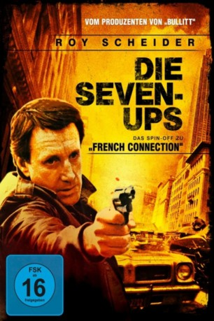
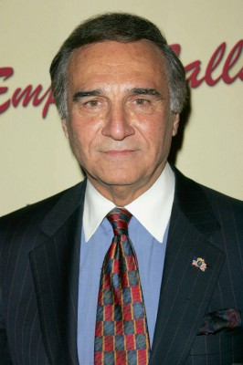
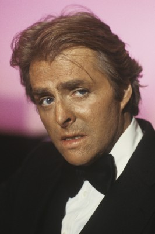
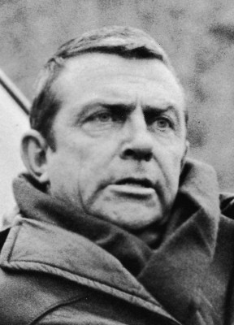
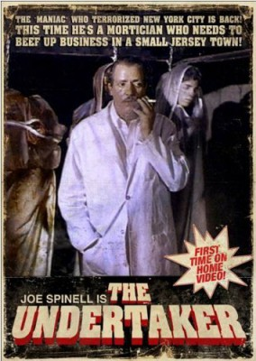
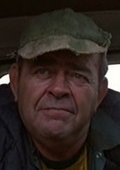

#3968 Die Seven-Ups
Alternativ: The Seven-Ups
 
 IMDB-Wertung: 6.8 / 10
IMDB-Wertung: 6.8 / 10  Metascore: 0
Metascore: 0 
Die "Seven-Ups", eine Elitetruppe der New Yorker Polizei, nimmt es mit Dienstvorschriften und Gesetzen nicht so genau, dafür ist sie erfolgreich. Ihr Anführer Buddy pflegt beste Beziehungen zum Unterweltler Vito, einem alten Jugendfreund - eine Hand wäscht die andere. Doch eines Tages geht eine Aktion gründlich in die Hosen
Jahr: 1973
Dauer: 103 Minuten
FSK: 16
Land: USA Studio: 20th Century FoxTonspuren:
Untertitel:
Auflösung: 1080p (1920x1040) Größe: 10147 MB
Genre: Action, Drama, Krimi
Regisseur: Philip D'Antoni
Drehbuch: James Kearns
Soundtrack:
Darsteller:
 Roy Scheider als Buddy - Seven-Up
Roy Scheider als Buddy - Seven-Up- Ken Kercheval als Ansel - Seven-Up
-  Tony Lo Bianco als Vito Lucia
-  Richard Lynch als Moon
-  Bill Hickman als Bo
-  Joe Spinell als Toredano
-  Rex Everhart als Inspector Gilson
- David Wilson als Bobby
 John Aprea als Killer , uncredited
John Aprea als Killer , uncredited Victor Arnold als Barilli - Seven-Up
Victor Arnold als Barilli - Seven-Up- Jerry Leon als Mingo - Seven-Up
- Larry Haines als Max Kalish
- Lou Polan als Carmine Coltello
- Matt Russo als Festa
- Robert Burr als Lt. Hanes
- Ed Jordan als Bruno
- Mary Multari als Mrs. Pugliese
- Frank Macetta als Barber
- Frances Chaney als Sara Kalish
- Mike Treanor als Policeman
- Benny Marino als Festa's Son
- Bill Funaro als Big Bill
- Billy Longo als Mobster #1
- Ace Alagna als Mobster #2
- Sheldon Adler als Doctor
- Adeline Leonard Seakwood als Nurse
- Edward F. Carey als Police Commissioner
- Geoffrey J. Felder als Dog Walker , uncredited
- Sonny Grosso als Counterfeit Money Courier , uncredited
- Thomas Rand als Minor Role , uncredited
- Roger Serbagi als Minor Role , uncredited
- William Shust als Minor Role , uncredited
- Tom Signorelli als Minor Role , uncredited
- Louis Yaccarino als Minor Role , uncredited
Datei: X:\3-Trilogie(A-F)\French Connection\Seven-Ups, Die (1973, FSK16, 1920x1040).mkv seit 07.07.2016
Festplatte: HD Collection-2(A-Z)-3(A-M)
 Alle Filme aus Gruppe '3-Trilogie(A-F)\French Connection'
Alle Filme aus Gruppe '3-Trilogie(A-F)\French Connection'